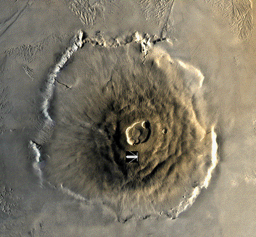

Amador City Amador City
Northwestern Hemisphere, Olympus Mons Urban Underground Fortification + Mine MacAllister Amador City sat within the largest mountain/volcano in the solar system, Olympus Mons, and is currently the Colony Management Corporation's seat of power on the red planet. The city was founded in UC 0033 amidst a small economic peak and was made the capital of Mars in leiu of the CMC's new economic plan. The city itself is comprised of ten levels and housed about a million people. Amador City functioned as the main hub for commerce and anything political, but has since fallen into disuse, the asteroid belt superceding Mars in the vast majority of trading disputes. MacAllister The head of the CMCs security forces on Mars, Colonal MacAllister was kicked out of the Federation for suspected pedophilic tendencies, but his excellent tactical track record found him a quick job in the corporate sector. Since the decadance of Mars has come to a head, MacAllister has found himself in command of, essentially, an entire planet, and he likes it that way. However, with every year, the citizens of Mars are growing less hospitable towards the CMCs presence on Amador. Amador City  |